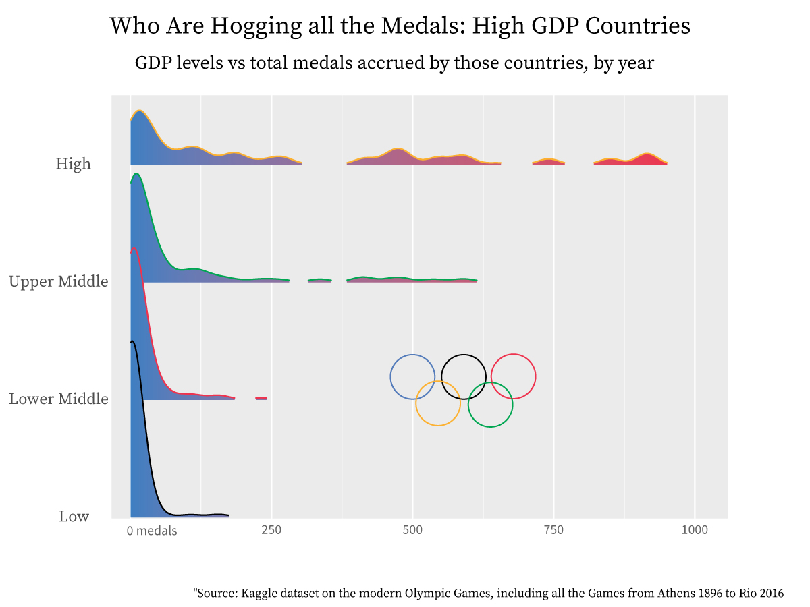
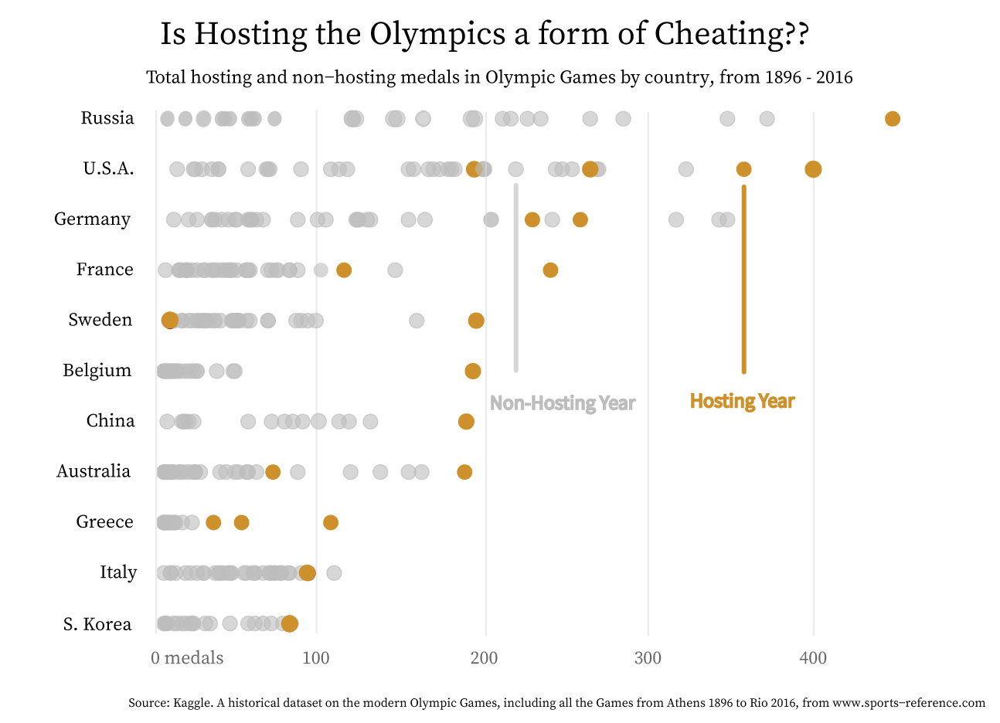
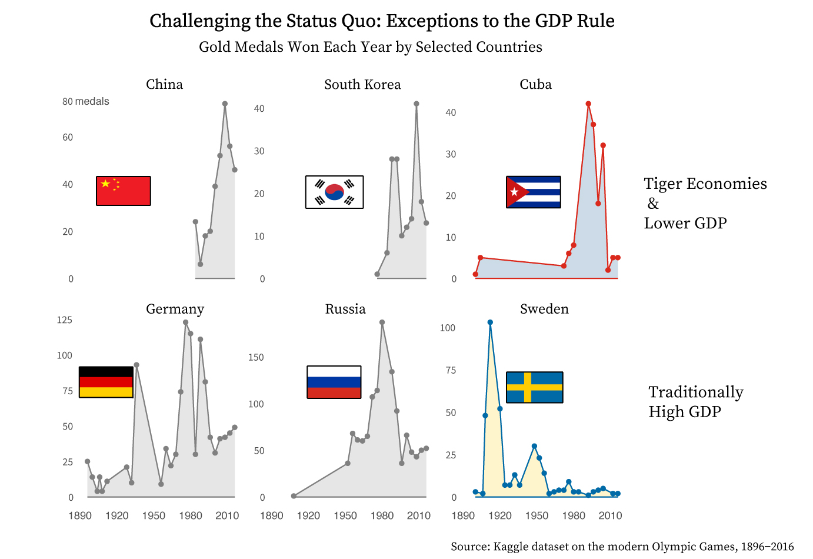

Is Olympic success pure athletic talent, or something more?
By: Lena Kim
The 2024 Paris Summer Olympics opens this July. Personally, as an avid Track and Field fan, I'm invested in the showdown between Dutch athlete Femke Bol and USA athlete Sydney Mclaughlin-Levrone in the finals of the women's 400 meters. Although the USA dominates the field of Track and Field, especially the shorter events such as the 400 meters, I couldn't help but think that Bol's Dutch nationality was a rarity in the field. That begged the question: who actually wins these Olympic events?
It's evident that nationality does play a part in determining athletic talent in certain fields, whether that's due to a culture conducive to success in the sport or through better funding for their sports programs. In an internationally celebrated and viewed event such as the Summer Olympics, viewers typically think that whoever wins that gold medal deserves it. They put all their hard work, sweat, and tears, so it would be outrageous to suggest that certain biases- like the athlete's country of origin- are actually at play in determing who wins.
But isn't there certain weight to this claim? Is winning truly based on athletic talent, or something more about where the athletes grew up, what privileges they enjoy as a citizen of their nation, and where they actually won their Olympic medal?
Let's see first: Which countries actually win medals?
From the map above, it is clear that the modern Olympic hegemons take the form of the USA and Russia, with China and Germany close runners-up.
There are some possible explanations as to why. Does it reflect cold war biases, in which the USA and Russia came out as super powers pitted against each other? This suggests that countries' fear of cold war hegemons bleeds into international athletic events, and is also not too plausible because this dataset covers all Olympics from 1896 to 2016, not just after the Cold War years.
Then why have the USA and Russia come out on top? Population may account for it, but a common factor among all four countries- USA, Russia, Germany, and China- are their high Gross Domestic Product output; in the 20th century, USA, Russia, and Germany have traditionally been one of the most Economically powerful countries, and China has emerged as a world leader in terms of economic output into the 21st century.
So let's take a look if, indeed, GDP affects Olympic success- defined here as the amount of medals the country has won:
Higher GDP countries are more likely to have won more medals. This makes sense- a country's higher gross domestic product output is correlated with having more resources to produce those goods, meaning more resources to put into athletic facilities.
What are some other biases that may influence which countries win medals? Does the location in which the Olympics are hosted have anything to do with Olympic success?
I've always been fascinated by this question. Whenever my dad, my sister, and I would gather around to watch Korean soccer, my dad would always say that the Korean team would never be able to get as far as they did in the 2002 World Cup, when they rose up all the way to semifinals. The thing is, the 2002 World Cup was jointly hosted by Japan and Korea. When you play reruns of any '02 match with Korea, it is clear that many of the judgement calls were favored towards Korea, especially the disallowed Spanish goals during Korea vs Spain in the round of 8.
And it is clear a similar story is unfolding here, with the Olympics. When countries host the Olympics, it is clear that they perform the best in those Olympics than other non-hosting years. Maybe this is compensation for the investment the country needs to make to host the games- perhaps the International Olympic Committee turn a blind eye towards blatant host-country favoritism, as long as the host-country provides Olympic venues?
But of course, the GDP and hosting correlations aren't hard and fast rules. Indeed, from the above, we can see that certain countries- Sweden, Australia, even Germany- have hosted Olympics where they did not necessarily win many medals. Hosting is not necessarily an immediate proxy for Olympic success, and neither is having a high GDP:
Most countries follow the GDP rule: as economies have gotten more productive- China and Korea experiencing rapid economic growth from the 1980s on, for example- their medal count has also tended to increase. Traditionally higher GDP countries, like Germany and Russia, have always earned a higher medal count, although their medal count fluctuates from year to year.
The true exceptions come from Cuba and Sweden. Though Sweden has always enjoyed a productive economy, their gold medal count is heavily right-skewed. From the 1920s on, though no significant shocks or crises to the Swedish economy have hit during this time period, they have never done as well as their higher GDP counterparts. And though the Cuban economy after the 1950s has suffered from economic sanctions, limited access to international markets, and a centralized econonomic system throughout the years- and as a result lower GDP- they have always done pretty well for themselves in terms of the gold medals they've won. Though the Cuban gold medal count still does not come close to the levels of Germany, they have been comparative to the tiger economies of Asia, even when the Asian countries saw significant growth and Cuba suffered an economic crisis in the 90's.
This all goes to show- though GDP and hosting do play a hand in who actually wins medals during those Olympics, they are not the only determinants. Athletic talent can still be fostered even if a country is not so affluent, and even if they do not have the means of hosting.
In another two months, we'll see just who gets to stand on the Olympic podium!
Sources: Olympics